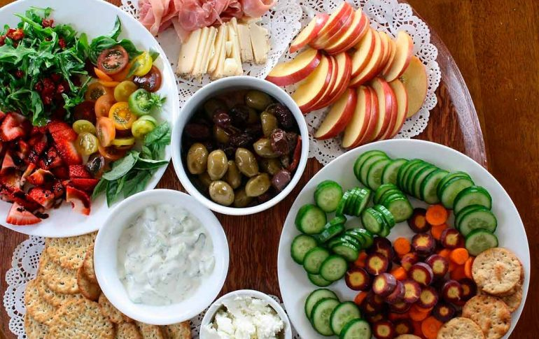

Hola! Esta es la pagina de Recetas especiales
Pan dulce:
Colocar en un bol los ingredientes para la masa previa. Recordá que la leche debe estar tibia, ni fría ni caliente. Es solo un chorrito.
Mezclá bien con cuchara, tapá con un repasador o con film y dejá que duplique su volumen (alrededor de 15-20 minutos).
En un bol grande colocar la harina, el azúcar, las ralladuras de limón y naranja y mezclar. Hacer un hueco en el centro y poner la sal
(alrededor, no en el centro), los huevos, la manteca pomada, la leche tibia, la masa previa ya levada y la esencia de vainilla. Mezclar
con la mano del centro hacia afuera hasta unir todo bien. Pasar la masa a la mesada y amasar 15 minutos hasta obtener una masa tierna.
Dividir en dos bollos (si vas a hacer dos pan dulces de 1/2 kg., sino no), tapar con film y dejar reposar una media hora.
Una vez levados, aplastar cada bollo para desgasificar y estirar en la mesada (con la mano), de forma cuadrada.
Colocar en el centro lo que hayas elegido de relleno, hacer un rollo y amasar un rato más, hasta que los frutos secos,
pasas, etc. queden bien integrados en la masa. Colocar en los moldes, tapar con un repasador y dejar levar por 1 hora,
hasta que asomen la cabeza por encima del molde. Yo lo puse en el horno apagado.
Hornear el pan dulce (o los) por unos 30-40 minutos a 180º, hasta que los veas dorados por arriba.
Retirar y dejar entibiar. Si no se quiere hacer glaseado, se puede pintar la parte de arriba con huevo o espolvorear
con azúcar impalpable. Para hacer el glaseado: mezclar 2 cdas. de azúcar impalpable con un chorrito (¡muy muy chiquito!)
de agua y dos o tres gotas de limón. Batir hasta integrar bien y bañar con esto los panes. ¡Y listo! Ahora ya sabés cómo hacer pan dulce.
